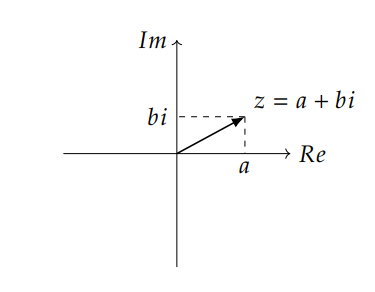
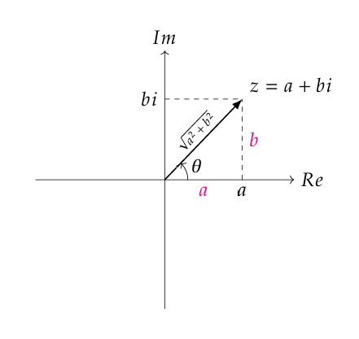
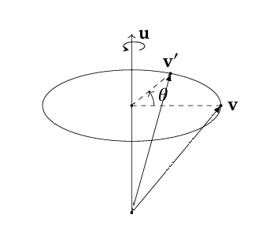
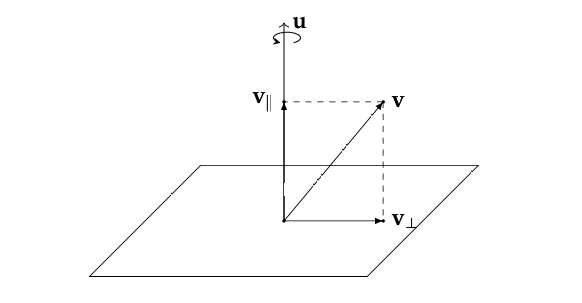
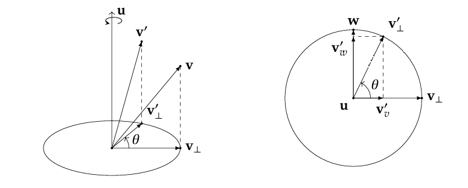

quaternion
在游戏编程中，我们经常需要处理三维旋转。在UE编辑器中，我们常常通过直截了当地设置Pitch、Yaw和Roll来控制旋转。同时在数学运算中我们可以很自然地用一个正交3x3矩阵来表示旋转。 这篇博客将阐述另一个更加高效地表示三维旋转的工具：四元数（Quaternion）。
四元数
1. 复数
我们都知道复数，即 z = a + bi, z ∈ ℂ，其中 a, b ∈ ℝ，以及一个神奇的规定 i2 = − 1。
放到二维平面上来看，如果一个轴表示复数的实部 a，另一个轴表示虚部 b，那么复数 z 就可以表示为平面上从原点 (0, 0) 指向点 (a, b) 的一个向量：

由于我们要讨论的是四元数和三维旋转的关系。因此在这里，我们可以初步猜想，复数应该与二维空间的旋转有关。
复数加减应该都很熟悉，我们就不提了。来看看复数的乘法，前面我们提到一个神奇的规定 i2 = − 1。
因此，假设有两个复数 z1 = a + bi 和 z2 = c + di，它们的乘积为：
$$ \begin{aligned} z_1 z_2 &= (a + bi)(c + di) \\ &= ac + adi + bci + bdi^2 \\ &= (ac - bd) + (ad + bc)i. \end{aligned} $$
何意味？别忘了，复数可以表示为二维平面上的向量。那么复数的乘法实际上就是对二维平面上的向量进行某种变换。因此复数的乘法可以写为：
$$ \begin{aligned} z_1 z_2 &= (ac - bd) + (ad + bc)i\\ &= \begin{bmatrix}a & -b\\ b & a \end{bmatrix}\begin{bmatrix}c\\ d \end{bmatrix}. \end{aligned} $$
右侧那个列向量 $\begin{bmatrix}c\\d\end{bmatrix}$ 是复数 z2 在二维平面上的表示，而左侧的那个 2 × 2 矩阵 $\begin{bmatrix}a & -b\\b & a\end{bmatrix}$ 则是复数 z1 对二维平面上向量进行变换的矩阵。（或者说，这是复数 z1 的矩阵形式）
如果考虑 z1z2 代表的变换，可以计算： $$ \begin{aligned} z_1z_2 &= \begin{bmatrix}a & -b\\ b & a \end{bmatrix}\begin{bmatrix}c & -d\\ d & c \end{bmatrix}\\ &= \begin{bmatrix}ac - bd & - (ad + bc)\\ ad + bc & ac - bd \end{bmatrix}. \end{aligned} $$
另外，虽然矩阵不满足乘法交换律，但是复数的相乘满足交换律，继而复数的矩阵形式也满足乘法交换律：
$$ \begin{aligned} z_2z_1 &= \begin{bmatrix}c & -d\\ d & c \end{bmatrix}\begin{bmatrix}a & -b\\ b & a \end{bmatrix}\\ &= \begin{bmatrix}ac - bd & - (ad + bc)\\ ad + bc & ac - bd \end{bmatrix}\\ &= z_1z_2. \end{aligned} $$
Bonus：尝试计算复数 i 对应的矩阵形式，再计算 i2 的矩阵形式，验证 i2 = − 1。
你应该很熟悉一个东西，叫做共轭复数。对于复数 z = a + bi，它的共轭复数记作 z̄ = a − bi。如果我们把复数看作二维平面上的向量，那么共轭复数就相当于把这个向量关于实轴对称翻转。
可以通过乘积计算复数的模：$\|z\| = \sqrt{z\bar{z}} = \sqrt{a^2 + b^2}$.
前面提到，复数对应于一个矩阵。而线性代数中告诉我们矩阵代表着一个变换。那么对于复数 z = a + bi，它对应的矩阵形式 $\begin{bmatrix}a & -b\\b & a\end{bmatrix}$ 代表着什么变换呢？
首先对这个矩阵进行一些转换，我们对矩阵进行一些变形，提取出一个系数 $\sqrt{a^2 + b^2}$： $$ \begin{bmatrix}a & -b\\ b & a \end{bmatrix} = \sqrt{a^2 + b^2} \begin{bmatrix}\frac{a}{\sqrt{a^2 + b^2}} & -\frac{b}{\sqrt{a^2 + b^2}}\\ \frac{b}{\sqrt{a^2 + b^2}} & \frac{a}{\sqrt{a^2 + b^2}} \end{bmatrix}. $$

从几何意义上看，复数对应的向量与实轴的夹角 θ 满足 $\cos\theta = \frac{a}{\sqrt{a^2 + b^2}}$，$\sin\theta = \frac{b}{\sqrt{a^2 + b^2}}$。因此上式可以写为： $$ \begin{bmatrix}a & -b\\ b & a \end{bmatrix} = \sqrt{a^2 + b^2} \begin{bmatrix}\cos\theta & -\sin\theta\\ \sin\theta & \cos\theta \end{bmatrix}. $$
右边这个矩阵很显然是我们熟悉的2D旋转矩阵，它代表着绕原点逆时针旋转 θ 角度的变换。而前面的系数 $\sqrt{a^2 + b^2}$ 则代表着对向量进行缩放的变换。
前面提到过，复数的乘法满足交换律。那么从几何意义上看，复数乘法的交换律意味着什么呢？实际上，这意味着二维空间中的旋转是满足交换律的。也就是说，先绕原点旋转 θ1 角度，再绕原点旋转 θ2 角度，和先绕原点旋转 θ2 角度，再绕原点旋转 θ1 角度，最终的结果是一样的。 但是，在三维空间中，旋转并不满足交换律。
若复数为单位复数，那么其所代表的几何意义就只有旋转了。对于上面提到的旋转矩阵 $\begin{bmatrix}\cos\theta & -\sin\theta\\\sin\theta & \cos\theta\end{bmatrix}$，写成复数形式就是 z = cos θ + isin θ。
我们应该很熟悉对于一个向量，用矩阵来变换它。那么与之对应的，对于该向量对应的复数，我们也可以用复数来变换它。
假设有一个复数 z1 = a + bi，以及一个单位复数 z2 = cos θ + isin θ，那么我们可以通过复数乘法 z1z2 来实现对复数 z1 所代表的二维向量进行旋转 θ 角度的变换： $$ \begin{aligned} z_1z_2 &= (a + bi)(\cos\theta + i\sin\theta) \\ &= (a\cos\theta - b\sin\theta) + (a\sin\theta + b\cos\theta)i. \end{aligned} $$
二者是一一对应的。
你可能知道一个东西，叫做欧拉公式，它告诉我们： eiθ = cos θ + isin θ.
因此可以将复数 z 表示为： z = reiθ,，其中 $r = \sqrt{a^2 + b^2}$。
这玩意能看成复数的极坐标形式，我们可以用一个缩放因子 r 和一个旋转因子 eiθ 来表示复数，它所代表的变换就是先缩放 r，再逆时针旋转 θ。
Bonus：用极坐标形式计算两个单位复数 z1 = cos θ1 + isin θ1 和 z2 = cos θ2 + isin θ2 的乘积 z1z2，并理解这个复合复数所代表的几何含义。
2. 三维旋转轴角式表示
三维空间的话，对于欧几里得坐标系，涉及到左手系和右手系的问题。在这里我们默认使用右手系。二者在数学计算上没有区别，只是在可视化上会有翻转。 右手系用右手定则来定义旋转的正方向，几何意义上看是轴方向对着你眼睛而言的逆时针旋转。
轴角，顾名思义，我们有一个旋转轴（单位向量） u⃗ = (x, y, z)T，以及一个旋转角度 θ。那么我们可以通过这个旋转轴和旋转角度来表示三维空间中的旋转：

现在我们明白了几何意义，我们想在数学上计算这个旋转。假设有一个三维向量 v⃗，我们想要绕旋转轴 u⃗ 旋转 θ 角度，得到旋转后的向量 $\vec{v'}$的数学表达式。
这个图其实已经给了我们思路，即向量分解。首先我们将 v⃗ 分解为两个分量：一个是平行于旋转轴 u⃗ 的分量 $\vec{v_{||}}$，另一个是垂直于旋转轴 u⃗ 的分量 $\vec{v_{\perp}}$。

平行的分量很好计算，我们知道向量点积的意义是投影，因此： $$\vec{v_{||}} = (\vec{v} \cdot \vec{u})\vec{u}.$$
通过向量减法得到垂直分量： $$\vec{v_{\perp}} = \vec{v} - \vec{v_{||}}= \vec{v} - (\vec{v} \cdot \vec{u})\vec{u}.$$
平行分量在旋转过程中显然是不变的，因此我们只需要计算垂直分量 $\vec{v_{\perp}}$ 的旋转。假设该垂直分量旋转 θ 角度后变为 $\vec{v'_{\perp}}$。
可以将其转换为平面问题：

需要计算同时正交于 u⃗ 和 $\vec{v_{\perp}}$ 的单位向量 w⃗：$\vec{w} = \vec{u} \times \vec{v_{\perp}}$.（注意叉乘顺序）
Bonus：证明 w⃗ 是单位向量。
因此可以很容易计算出 $\vec{v'_{\perp}}$： $$ \vec{v'_{\perp}} = \vec{v_{\perp}}\cos\theta + (\vec{u} \times \vec{v_{\perp}})\sin\theta. $$
将两个分量合并，得到最终的旋转结果： $$ \begin{aligned} \vec{v'} &= \vec{v_{||}} + \vec{v'_{\perp}} \\ &= (\vec{v} \cdot \vec{u})\vec{u} + \left(\vec{v} - (\vec{v} \cdot \vec{u})\vec{u}\right)\cos\theta + (\vec{u} \times \left(\vec{v} - (\vec{v} \cdot \vec{u})\vec{u}\right))\sin\theta \\ &= \vec{v}\cos\theta + (\vec{u} \cdot \vec{v})\vec{u}(1 - \cos\theta) + (\vec{u} \times \vec{v})\sin\theta. \end{aligned} $$
记住这个公式。
3. 四元数
和复数不同的是，四元数有四个分量。一个实部和三个虚部。我们可以将四元数表示为： q = a + bi + cj + dk,其中 a, b, c, d ∈ ℝ，以及 i, j, k 是三个虚数单位，满足以下关系： i2 = j2 = k2 = ijk = − 1.
四元数可以表示成向量的形式： $$q = \begin{bmatrix}a\\b\\c\\d\end{bmatrix}.$$
经常将四元数的实部和虚部分开表示： $$q = [s, \vec{v}] = [a, \begin{bmatrix}b\\c\\d\end{bmatrix}].$$
四元数的模则可以表示为： $$\|q\| = \sqrt{a^2 + b^2 + c^2 + d^2}.$$
用有序对表示，q = [s, v⃗] 的模长为： $$\|q\| = \sqrt{s^2 + \|\vec{v}\|^2}=\sqrt{s^2 + \vec{v} \cdot \vec{v}}.$$
四元数的加减你应该能脑补出来，我们来重点看四元数的乘法。首先我们要知道的是，四元数的乘法不满足交换律。
具体乘积是怎么算的呢？假设我们有两个四元数 q1 = a + bi + cj + dk 和 q2 = e + fi + gj + hk，它们的乘积为： $$ \begin{aligned} q_1 q_2 &= (a + bi + cj + dk)(e + fi + gj + hk) \\ &= (ae - bf - cg - dh) \\ &\quad + (af + be + ch - dg)\,i \\ &\quad + (ag + ce + df - bh)\,j \\ &\quad + (ah + de + bg - cf)\,k. \end{aligned}$$
用矩阵和向量相乘的形式表示为： $$ \begin{aligned} q_1 q_2 &= \begin{bmatrix}a & -b & -c & -d\\ b & a & -d & c\\ c & d & a & -b\\ d & -c & b & a \end{bmatrix}\begin{bmatrix}e\\f\\g\\h \end{bmatrix}\\ &= \begin{bmatrix}ae - bf - cg - dh\\ af + be + ch - dg\\ ag + ce + df - bh\\ ah + de + bg - cf \end{bmatrix}. \end{aligned}$$
如果令 $\vec{v} = \begin{bmatrix}b\\c\\d\end{bmatrix}, \vec{u}=\begin{bmatrix}f\\g\\h\end{bmatrix}$，那么 v⃗ ⋅ u⃗ = bf + cg + dh.
$$ \vec{v} \times \vec{u} = \begin{bmatrix}ch - dg\\dh - bf\\bg - cf\end{bmatrix}. $$
如果用 i⃗, j⃗, k⃗来表示向量的基，那么 v⃗ × u⃗ = (ch − dg)i⃗ + (dh − bf)j⃗ + (bg − cf)k⃗。
可以因此推出 q1q2 = [ae − v⃗ ⋅ u⃗, au⃗ + ev⃗ + v⃗ × u⃗].
如果二者都是纯四元数（即实部为0），即令 v = [0, v⃗], u = [0, u⃗]，则有： vu = [ − v⃗ ⋅ u⃗, v⃗ × u⃗].
四元数也有共轭。对于四元数 q = a + bi + cj + dk，它的共轭四元数记作 q* = a − bi − cj − dk。
出于好奇，可以算 qq*： $$ \begin{aligned} q q^{*} &= [s, \vec{v}] [s, -\vec{v}] \\ &= [s^2 - \vec{v} \cdot (-\vec{v}), s(-\vec{v}) + s\vec{v} + \vec{v} \times (-\vec{v})] \\ &= [s^2 + \vec{v} \cdot \vec{v}, \vec{0}] \\ &= \|q\|^2. \end{aligned}$$
同时你也可以验证，q*q = ∥q∥2. 因此这种乘法是满足交换律的。
四元数有个逆的概念。如果 q 是一个非零四元数，那么它的逆四元数 q − 1 定义为： qq − 1 = q − 1q = 1.(q ≠ 0)
如果在 qq − 1 = 1 两边同时右乘 q*，则有： $$ \begin{aligned} qq^{-1}&=1\\ \Rightarrow qq^{-1}q^{*}&=q^{*}\\ \Rightarrow \|q\|^2 q^{-1}&=q^{*}\\ \Rightarrow q^{-1}&=\frac{q^{*}}{\|q\|^2}. \end{aligned} $$
因此如果要计算一个四元数的逆，只需要先改变虚部的符号，然后除以它模的平方即可。如果 q 是单位四元数，那么它的逆四元数就是它的共轭四元数。
前面我们用轴角方法推旋转公式用到了若干向量，假设把它们全部转换为纯四元数的形式： $$ \begin{aligned} v &= [0, \vec{v}]\\ u &= [0, \vec{u}]\\ v_{||} &= [0, \vec{v_{||}}] = [0, (\vec{v} \cdot \vec{u})\vec{u}]\\ v_{\perp} &= [0, \vec{v_{\perp}}] = [0, \vec{v} - (\vec{v} \cdot \vec{u})\vec{u}]\\ v'_{\perp} &= [0, \vec{v'_{\perp}}] = [0, \vec{v_{\perp}}\cos\theta + (\vec{u} \times \vec{v_{\perp}})\sin\theta]. \end{aligned} $$
我们先讨论 v′⊥ 如何被四元数变换表示。用前面我们计算过的结论，可以证明： v′⊥ = cos θ v⊥ + sin θ (uv⊥).
把 v⊥ 提到右边，就有了我们经常见到的变换的形式： v′⊥ = (cosθ+sinθ u)v⊥.
令四元数 q = cos θ + sin θ u，则 v′⊥ = qv⊥。
也就是说，这个旋转可以用四元数 q 来表示。如果旋转轴 $u=\begin{bmatrix} u_x\\u_y\\u_z \end{bmatrix}$，具体 q 展开为： q = cos θ + uxsin θ i + uysin θ j + uzsin θ k.
Bonus：证明四元数 q = cos θ + sin θ u 是单位四元数。
其实这就已经推出了特殊情况下的四元数变换形式了，这个特殊条件就是 v 垂直于旋转轴 u。
我们可以获得一般情况下 v′ 的结果： $$ \begin{aligned} v' &= v_{||} + v'_{\perp} \\ &= v_{||} + q v_{\perp}. \end{aligned}$$
其中 q = [cos θ, sin θu⃗].
接下来对于一般情况四元数变换的推导，非常的巧妙，非常的反人类。
我们首先考虑计算 q2： q2 = [cos (2θ), sin (2θ)u⃗].
这很显然，如果 q 代表垂直于旋转轴的向量旋转 θ 角度的变换，那么 q2 就代表垂直于旋转轴的向量旋转 2θ 角度的变换。
因此，考虑令 p2 = q，可以得到： $$ p = [\cos (\frac{\theta}{2}), \sin (\frac{\theta}{2}) \vec{u}]. $$
这里 p 也是个单位四元数。
现在，对上面的一般旋转公式进行变形： $$ \begin{aligned} v' &= v_{||} + q v_{\perp}\\ &= 1 \cdot v_{||} + p^2 v_{\perp}\\ &= p p^{-1}v_{||} + p p v_{\perp}. \end{aligned} $$
由于 p 是单位四元数，因此 p − 1 = p*。继续变形： $$ \begin{aligned} v' &= p p^{-1}v_{||} + p p v_{\perp}\\ &=p p^{*} v_{||} + p p v_{\perp}. \end{aligned} $$
不对孩子们，我们还没办法化简完毕。接下来的化简过程需要你知道两个东西：
1、假设 $v_{||}=[0, \vec{v_{||}}]$ 是一个纯四元数，而 q = [α, βu⃗]，其中 u⃗ 是单位向量。那么如果 v|| 平行 u⃗，则有 qv|| = v||q；
2、假设 $v_{\perp}=[0, \vec{v_{\perp}}]$ 是一个纯四元数，而 q = [α, βu⃗]，其中 u⃗ 是单位向量。那么如果 v⊥ 垂直 u⃗，则有 qv⊥ = v⊥q*.
有这俩结论可以进一步简化上面那个式子： $$ \begin{aligned} v' &= p p^{*} v_{||} + p p v_{\perp}\\ &= p v_{||} p^{*} + p v_{\perp} p^{*}\\ &= p (v_{||} + v_{\perp}) p^{*}\\ &= p v p^{*}. \end{aligned} $$
因此，我们有如下结论：
任意向量 v⃗ 绕单位旋转轴 u⃗ 旋转 θ 角度后的结果 $\vec{v'}$ 可以通过四元数变换表示为： v′ = qvq* = qvq − 1,
其中 $q = [\cos (\frac{\theta}{2}), \sin (\frac{\theta}{2}) \vec{u}]$，v = [0, v⃗]，$v' = [0, \vec{v'}]$.
当然这种变换的形式没办法从直观上感受（前面矩阵变换都是将整个矩阵放到要变换向量的前面，而这里要变换的向量夹在了两个四元数中间）。
要变成直观的形式还是得展开： $$ \begin{aligned} v' &= q v q^{*}\\ &= qq^{*} v_{||} + qq v_{\perp}\\ &= v_{||} + q^2 v_{\perp}. \end{aligned} $$
对于平行分量无变换，而垂直分量的变换则为 q2.
Bonus：证明 qvq* = [0, v⃗cos θ + (u⃗ ⋅ v⃗)u⃗(1 − cos θ) + (u⃗ × v⃗)sin θ]。